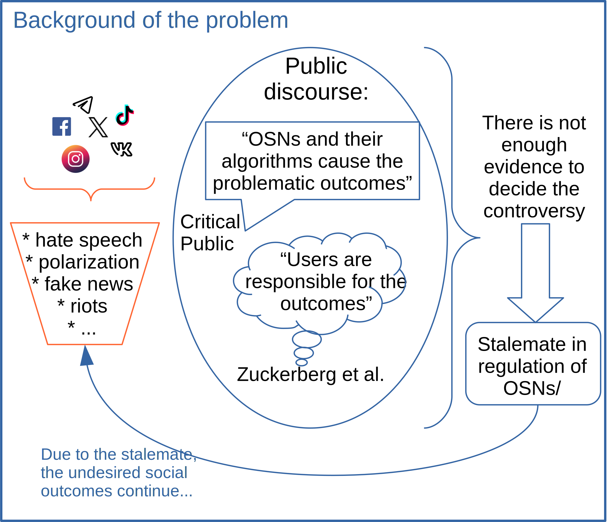
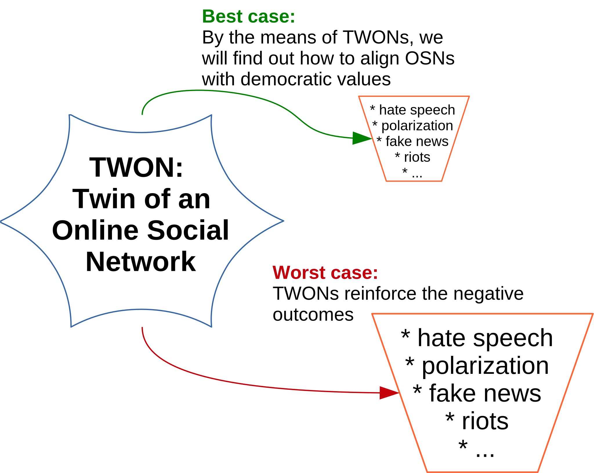
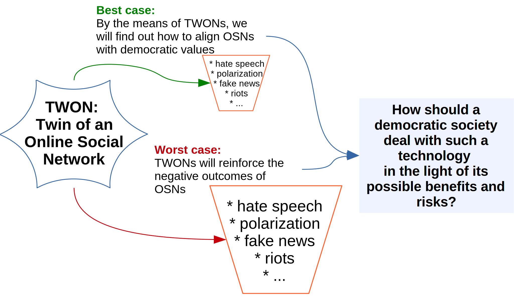
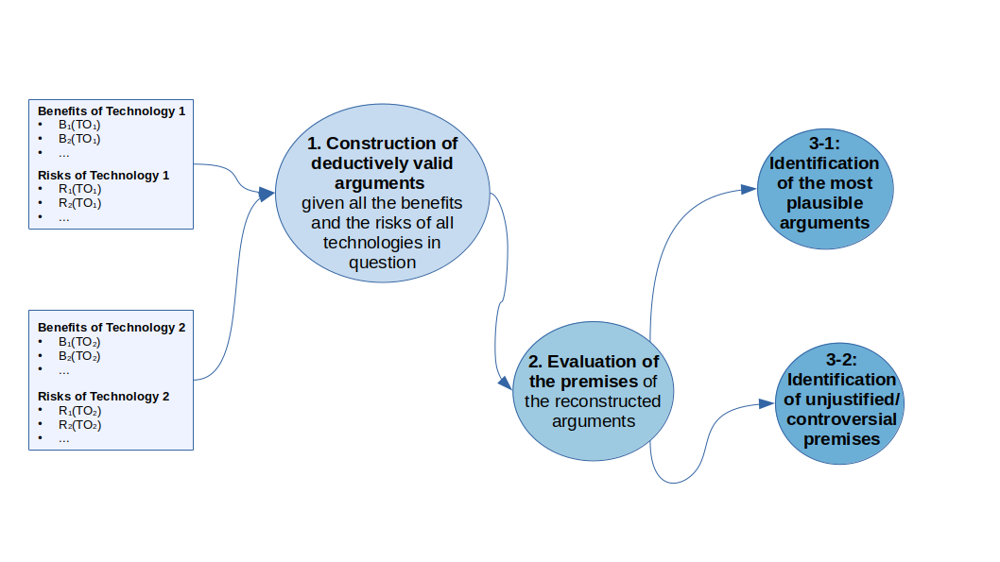
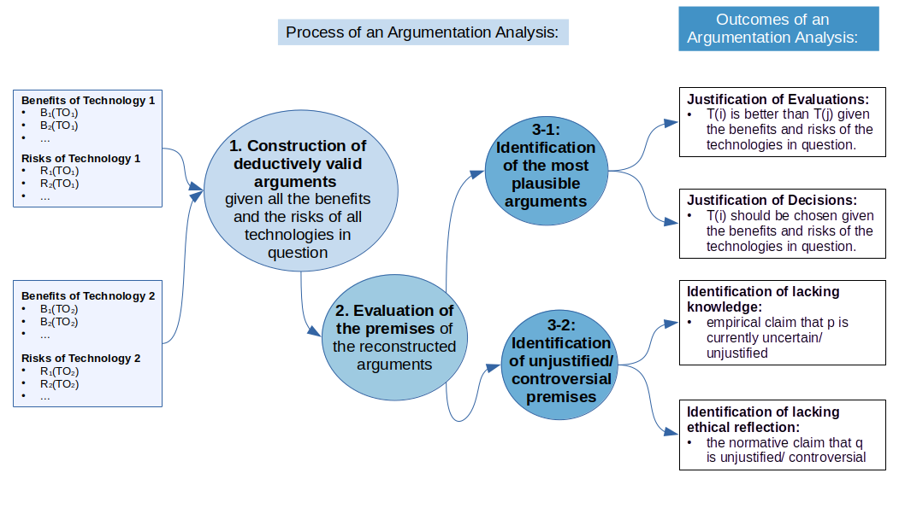

Can Two Wrongs Make a Right?
A case study on ethical judgement in technology assessment


TWON: Twin of an Online Social Network
- Twin: a precise model
- examples for models of complex systems:
- weather forecasts
- climate models
- examples for twins:
- urban twins
- manufacturing
- examples for models of complex systems:
- TWONs: digital copies of Facebook, Twitter, Instagram, TikTok etc.
Expected Benefits of TWONs
- identification of algorithms of the original OSNs
- prediction of hate speach clusters, polarization etc.
- reconstruction of causal effects: who has caused certain problematic outcomes
Risks of TWONs
- misuse of TWONs for individual interests by powerful agents:
- increase in manipulation, fake news etc.
- reinforcement of existing inequalities

- a technology (OSNs such as Facebook, Twitter etc.) is associated with strongly undesired societal outcomes.
- to find out if and how to regulate the problematic technology, a second technology – twins of OSNs – are build.
- the intention is to find by the means of the new technology how to prevent the undesired outcomes.
- but it could turn out that the new technology reinforces the undesired outcomes of the original technology.
A Method for Ethical Reflection: Argumentation Analysis
Argumentation Analysis
Helps to justify a comparison between technological options given their expected benefits and risks
Helps to justify a comparison between technological options given their expected benefits and risks


Outcome: Our Recommendations
Insight 1: The risks and benefits of the TWON hinge upon the manner and extent to which access to this technology is regulated.
There is a plenitude of options for governance of TWONs, ranging from
- unrestricted public access: analogously to available free web-search engines or publicly accessible LLM-chatbots
- to a strictly controlled usage: analogously to the governance of sensible technologies (e.g., CERN, applications in nuclear physics) or of sensible data panels (e.g. SOEP).
Insight 2: Each mode of governance brings with it distinct societal benefits and risks.
| Possible Benefits | Risks |
|---|---|
| high economic gains | intensified undermining of individual autonomy from freely available tools for manipulation, mis- and disinformation |
| Public control of online social networks: prevention or disclosure of manipulation, mis- and disinformation | Collapse of institutions necessary for democratic governance |
| unrestricted knowledge gains from better measurment of social realities | Reinforcement of existing inequalities in financial and political power |
| Possible Benefits | Risks |
|---|---|
| Control of online social networks: prevention or disclosure of manipulation, mis- and disinformation | turns out to be ineffective for control of online social networks |
| knowledge gains from better measurement of social realities (though smaller than in free public access) | estriction of access to TWONs turns out to be infeasible (the access to a certain group turns out not to be restrictable): hidden undermining of individual autonomy |
Insight 3: Given what is now known about the possible consequences of the use of TWON, none of the governance modes discussed can be rejected on sound grounds.
- It is possible that a free public access to TWONs is the sole means by which deployment of manipulative, mis- or disinformative algorithms on online social networks can be revealed and theirby publicly controlled. If this turns out to be the case, this would provide a weighty reason for a free public access to TWONs.
- It is possible that access to TWONs, restricted to approved researchers, is sufficient to control the algorithms of online social networks. This, in turn, would provide a weighty reason for restricting TWON’s availability to a group of researchers.
- Since it is unclear which of these possibilities is true, it is impossible to rule out one of the governance modes.
Insight 4: Some premises in the justifications of different governance modes are uncertain. It is imperative that these premises be addressed by future research or thorough deliberation in order to enable an informed decision regarding the deployment of TWONs.
- Feasibility of regulating access to TWONs: It is currently uncertain if it will be practically possible to restrict access to TWONs. This depends on the complexity of underlying technology (if, after the bluepring for the underlying models has been developed, anybody with sufficient financial and/or computational resources can set up TWONs, it is unlikely that access restrictions will become enforcable) and on the amount of personal data from an online social network needed for a reliable simulation.
- Availability of alternative means for safeguarding democratic values and enforcing legislation on online social networks: the recently adopted legislation in the EU (namely, the Digital Services Act (DSA) and the Artificial Intelligence Act (AIA)) is designed to regulate the activities of large online platforms. Nevertheless, it is currently unclear to what extent these acts can be enforced. It may be the case that an instrument such as a TWON is required for the two acts to become legally effective.
- Quantification of the extent to which norms, values, and rights worthy of protection (such as democratic self-determination, individual autonomy, the right to informational self-determination) are jeopardized by online social networks: the decision regarding the governance of TWONs is contingent upon the extent to which these values are threatened by the prevailing online social networks and the diverse governance modes of TWONs. At the moment, no comparisons of the threads are available.
- How should the differences in the potential benefits and risks of different modes of gorvernance of TWONs be weighed? Unrestricted public access promises the highest economic benefits from TWONs, but this mode of governance is also associated with the highest risks. The stricter the regulation of TWONs is, the lower are as the expected economic benefits as the risks. Assessments of societal risks and benefits are often highly controversial within a society.
Insight 5: If TWONs turn out to be a technology that requires strict regulation, the research and development process must also be subject to regulatory oversight.
Insight 6: At the moment, it is unclear how much a TWON’s ability to inform the regulation of online social networks hinges on detailed personal data about individual users. By means of modeling of fictional reality, however, the reliance on personal data can be rigorously quantified.